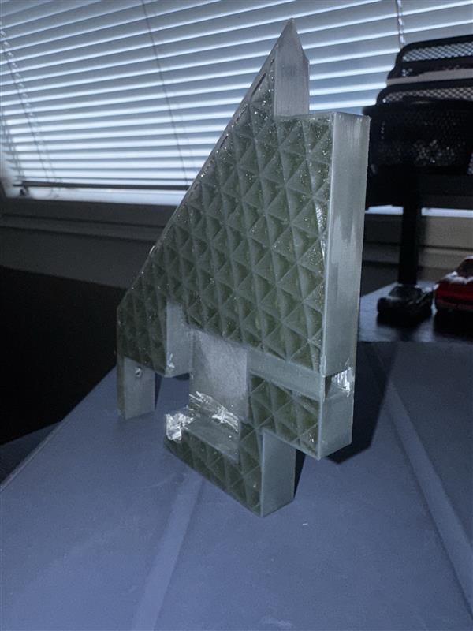

Active Rocket Roll Control
Ongoing Project
Current stage: First full-vehicle CAD iteration
What the project is
I'm building a subscale rocket that can actively control its roll using four servo-actuated canards. For now, the project is intentionally limited to roll instead of trying to solve roll, pitch, and yaw at the same time. The vehicle is still in development, and I'm currently working through the first full-vehicle CAD iteration.
Where it started
The project originally used servo-actuated tabs built into the rocket's main fins. I worked on the OpenRocket vehicle model, aerodynamic loading and torque calculations, servo sizing, fin geometry, CAD, 3D printing, and several physical prototypes. That work gave us an initial picture of the loads the actuator would need to handle and what it would take to package the mechanism inside a fin.
One practical issue we had not finished solving was serviceability. The servo was embedded inside the fin, so after assembly we would still need a way to remove it and reuse it. We discussed a removable casing or some type of access feature, but the project changed direction before we developed that into a final design.
One of the early fins was printed with an internal lattice, and I let epoxy seep into the structure to see how the manufactured part would turn out. It became extremely rigid, but it was also extremely heavy—basically a brick. That much mass near the bottom of the rocket would have shifted the vehicle's center of gravity significantly downward. The prototype was never load tested, aerodynamically tested, or flown. I only manufactured it to see how the concept behaved physically.

How the architecture changed
From there, the project moved toward fully actuated surfaces and eventually the current canard-based vehicle. As the design developed, actuator access, packaging, and integration started driving more of the architecture.
For the current vehicle, we narrowed the goal to roll control. That keeps the first flight system manageable while still forcing us to work through the mechanical hardware, sensing, controls, and integration needed to actually close the loop.
I initially considered using two canards because fewer servos meant less hardware and simpler packaging. I moved to four because the symmetric layout gives the controller more options for countering aerodynamic moments when the rocket is not perfectly aligned with the flow. How much control authority that gives the vehicle still needs to be worked out through analysis and testing.
Current design
The current vehicle has four forward servo-actuated canards and four stationary aft fins. The canards are only being used for roll control. Onboard sensing and control hardware are planned for closed-loop operation, and the avionics and recovery hardware have to fit into the same vehicle rather than being treated as separate systems at the end.
Packaging has already changed the size of the rocket. An earlier concept used an airframe around 2.6 inches in diameter and looked workable before the actual servos were brought into CAD. Once I placed the real hardware inside the vehicle, the available space became impractical. I had to resize and rework the layout around the components the rocket will actually carry.
That is one reason I'm modeling the full vehicle this early. The CAD is not just a drawing of a finished idea; it is where conflicts among the canard mechanism, airframe, avionics, and recovery layout start becoming visible.
Current CAD and where the project stands
The first complete external vehicle model is now built. The nose, airframe, four forward canards, and four aft fins are all in the assembly, so the overall architecture is finally starting to look like a real vehicle instead of a collection of separate mechanisms.
The detailed mechanical integration is still underway. The canard attachment hardware and internal canard bay are not finished, and I'm waiting on some dimensions before I can finalize those pieces. That interface and the internal packaging are the main CAD work right now.

What happens next
The next step is to finish the canard attachment, internal bay, and overall mechanical layout so the hardware can be manufactured. From there, I plan to prove the canard actuation on the bench before integrating the sensing and control electronics. That includes validating the IMU roll-rate measurement and working toward closed-loop bench testing.
Once the mechanical and controls work can operate together, the project can move into system-level testing and eventually a subscale flight. It is still an active project, and I'll keep updating this page as the design becomes hardware and the testing starts producing real results.